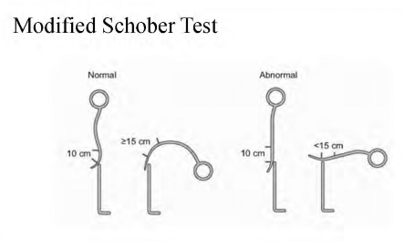
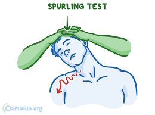
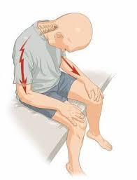

16. 목통증/허리통증
원인 | ||||
물리적 이상 | 외상성 질환 | 목/허리삠, 긴장, 골절 등 | ||
| 퇴행성 질환 | 추간판탈출증, 뼈관절염, 척추관협착 등 | ||
| 기타 | 근막통증 증후군 등 | ||
비물리적 외상 | 감염(수막염), 자가면역(강직성 척추염), 종양(전이뼈암) | |||
평가목표 1) 목통증/허리통증을 호소하는 환자에게 병력청취와 신체진찰로 통증의 원인을 감별할 수 있는가 2) 필요한 환자교육을 시행할 수 있는가 3) 적절한 진단 및 치료계획을 수립할 수 있는가 | ||||
구체적인 성과 | ||||
병력 청취
| 통증의 중요 특성 평가 | O/L/D/Co/Ex + 양상 | ||
| 통증 원인 파악을 위한 동반 증상과 위험 요인 평가 | 동반증상 위험요인 평가: 외상력, 과거력, 가족력 등 | ||
| 신경 이상 증상이 있는지 | 신경 압박 증상: 방사통/감각이상/운동이상 | ||
신체 진찰
| 목 및 허리 주위조직의 상태 확인을 위한 신체진찰 | 통증 부위 시진, 촉진(압통점 확인) ROM 평가 | ||
| 신경의 이상을 확인하는 신체진찰 | 목: 상지 감각/운동/DTR 허리: 하지 감각/운동/DTR 특이검사, 수막자극징후 | ||
| 연관통을 확인하는 신체진찰 | 근막통증증후군 통증 유발점 눌러보기 핵심 특징: 통증 유발점 (Trigger Point) 근막통증증후군 근육의 일부분이 쌀알이나 밴드처럼 딱딱하게 만져지는데, 이곳을 누르면 자지러지게 아프면서 **연관통(Referred Pain)**이 나타납니다. -연관통: 예를 들어, 어깨(승모근)에 유발점이 있는데 통증은 뒷머리나 관자놀이 쪽으로 뻗쳐서 **'긴장성 두통'**처럼 느껴지기도 합니다. -국소 연축 반응: 유발점을 누르거나 침으로 찌르면 근육이 움찔하며 수축하는 반응이 나타납니다. | ||
진단 및 치료 | 원인질환 감별 | 경추간판탈출증, 경추염좌, 척추관협착증 | 요추간판탈출증, 요추염좌, 척추관협착증, 강직성 척추염 | |
|
| 혈액검사, 영상검사(X-ray, CT/MRI) | ||
| 원인에 따른 치료계획 | 1)안정 2) 스트레칭+물리치료+찜질+보조기 3)진통제 | ||
교육 | 원인에 따라 필요한 사항 교육 | [자세], [응급] | ||
질환 | 질환 설명 | 병력청취 | 신체진찰 | 검사 | 치료 | ||
목통증 | 경추간판탈출증 3 + 1 | 목 뼈 사이의 완충제(디스크)가 밀려 나와 팔로 가는 신경을 누르는 질환 | 방사통 (+): 목-팔-손가락 A-상지 저린감 악화: 목 뒤로 젖힐때 | -Spurling test (+) | C-spine X-ray C-spine CT, MRI | 침상 안정, 보조기 착용, 진통제 | |
| 경추염좌 2+1 | 목 주변의 근육이나 인대가 갑작스러운 충격으로 놀라 일시적으로 붓고 아픈 상태, “목 삐끗” | 방사통 (-) L-뒷목 하부 양측 C-둔하면서 쑤시는 악화:움직임/완화:휴식 |
| C-spine X-ray C-spine CT, MRI | 침상 안정, 보조기 착용, 진통제 스트레칭 | |
| 채찍질 손상 1
| 목이 채찍처럼 앞뒤로 크게 휘둘리면서, 목 주변의 근육과 인대가 미세하게 찢어지고 놀란 상태 | 교통 사고 Hx A-두통, 어깨통증, 어지러움, 구역, 구토 |
| C-spine X-ray C-spine CT, MRI | 침상 안정, 보조기 착용, 진통제
| |
| 근막통증 증후군 | 근육이 과도하게 긴장해서 딱딱하게 뭉쳐 '통증 유발점'이 생기는 병, “담 걸리다”
| L-아픈 부위 명확(누르면 다른곳이 아프다고 호소), 띠형태 C-목 뻐근, 뒤가 당긴다 A-땀나고 털이 섬(활동성 유발점에 의한 자율신경 증상) |
|
| 온열 치료 활동성 근막 유발점에 바늘을 삽입하여 파괴 | |
| 척추관협착증 | 나이가 들면서 신경이 지나가는 통로가 좁아져 신경을 조이게 되는 질환 | 50세 이상 O-서서히 악화 L-목, 어깨, 양팔 신경근 따라 통증 |
| C-spine X-ray C-spine CT, MRI | 침상 안정, 보조기 착용, 진통제 | |
| 류마티스 관절염 | 면역 체계가 내 몸의 관절을 공격해서 염증과 변형을 일으키는 만성 질환 | 아침에 뻣뻣 L-다른 관절 통증 동반 |
| C-spine X-ray 혈액검사 (염증수치, 류마티스 인자, 자가항체) | 약물치료를 통한 염증억제 (소염제, 스테로이드) | |
| 척추종양 | 척추 뼈나 신경 주위에 혹(양성/악성)이 생겨 뼈를 약하게 하거나 신경을 누르는 상태입니다 | A-체중감소 + 배뇨장애 등 여러 이상 동반 가능 과-이전 암 Hx |
| C-spine X-ray C-spine CT, MRI | 수술, 항암화학요법, 방사선 치료 | |
| 수막염 | 뇌와 척수를 싸고 있는 막에 염증이 생겨 고열과 함께 목이 뻣뻣해지는 응급 질환입니다 | A-발열, 감기증상
| -수막자극징후, -국소 신경학적 이상 | C-spine CT/MRI 뇌 CT/MRI 뇌척수액천자
| 약물치료 (항생제, 스테로이드) | |
| 삼차신경통 | 얼굴 감각을 담당하는 신경이 자극을 받아 벼락이 치는 듯한 강한 통증이 느껴지는 병 | O-갑자기 발생 A-얼굴 찌르는듯한 통증
|
| 뇌 MRI | 약물치료 (카바마제핀 - 신경 흥분 억제) 수술 | |
| 전방 구조물 (Anteriormediastinum mass) | 목 앞쪽의 식도나 기도, 갑상선 등에 문제가 생겨 목 주변까지 통증이 번지는 것 | A-체중감소, 목소리 변화, 발음 힘듦, 연하곤란 |
| Neck CT/MRI | 수술적 제거 | |
허리통증 | 요추 | 요추간판탈출증 2+0 | 허리 뼈 사이의 디스크가 터져 나와 다리로 내려가는 신경을 건드려 통증이 생김 | L-편측 하지 통증, 앞으로 숙일 때 아픔 A-하지 저린감 | -편측 SLRT (+) -하지 감각/근력이상 -DTR 감소 | L-spine X-ray L-spine CT/MRI | 침상 안정, 보조기 착용, 진통제 필요시 수술 |
|
| 요추염좌 2+1 | 허리 주변의 근육이나 인대가 갑작스러운 충격으로 놀라 일시적으로 붓고 아픈 상태 “허리 삐끗” | O-운동, 무거운거 들다가 L-요통
| -허리 ROM 감소 -압통점 존재 -신경학적 증상X | L-spine X-ray L-spine CT/MRI | 침상 안정, 보조기 착용, 진통제 |
|
| 요추압박골절 | 골다공증 등으로 약해진 허리 뼈가 외부 충격에 의해 깡통처럼 찌그러진 상태 |
|
|
|
|
| 허리 | 척추관협착증 1+1 | 척추 속 신경 터널이 좁아져서 조금만 걸어도 다리가 저리고 힘이 빠지는 병 | 오래 걷기 힘듦(다리저림) L-요통, 하지통증 악화: 허리 젖히면 완화: 앉거나 누우면 | -허리 ROM 중 extension 제한 -감각,근력 대게 정상 | L-spine X-ray L-spine CT/MRI | 침상 안정, 보조기 착용, 진통제 필요시 수술 |
|
| 강직성 척추염 1+1 | 척추에 만성적인 염증이 생겨 뼈들이 대나무처럼 하나로 굳어가는 질환 | 20~30대 젊은 남성 아침에 뻣뻣 + 통증 A: 포도막염 완화: 운동/악화: 휴식 | -Schober test (+) -Patrick test (+): 반대 뒷편 통증 | L-spine X-ray 혈액검사 (ESR, CRP, HLA B27) | NSAID, 재활 및 운동 치료, Infliximab |
|
| 척추 종양 | 척추 뼈나 신경 주위에 혹(양성/악성)이 생겨 뼈를 약하게 하거나 신경을 누르는 상태입니다 | 야간 통증 A-체중감소 과-이전 암 Hx | -하지 감각/근력이상 | L-spine X-ray L-spine CT/MRI | 방사선치료 항암화학요법 수술 |
| 그외 | 마미증후군 | 허리 아래쪽 신경 다발이 심하게 눌려 대소변 조절이 안 되고 감각이 마비되는 응급 상황 | A-요실금, 변실금 | -양하지 근력저하 -DTR 감소 -회음부/항문 감각 마비 | L-spine X-ray L-spine CT/MRI | 응급 수술로 감압 |
|
| 골관절염 | 관절 사이의 연골이 닳아 없어져 뼈끼리 부딪히며 염증과 통증을 유발하는 노화 현상 | 50세 이상 A-비빔소리(crepitus), 조조강직<30분 | -허리 ROM 감소 | L-spine X-ray L-spine CT/MRI | NSAID, 재활 및 운동 치료 생활습관개선 |
| 목통증 | 허리통증 | |||
O | 언제 갑/서 통증이 시작된 상황 목-교통사고(채찍질 손상) 삐끗(경추염좌)/허리-넘어지거나 부딪힌적 (압박골절) 무거운거 들다가(요추염좌) | ||||
L | 통증 부위/짚어보시겠어요? 그 외 아픈 곳/ 뻗치는지 | ||||
D | 지속 시간 빈도 | ||||
Co | 점점 심해지나요? | ||||
Ex | 이전 경험 – 치료 | ||||
C | [양상] -Open Q -> 칼로 찌르듯이/전기 통하듯이/둔하고 뻐근 -Tenderness(압통)/Redness(발적)/Swelling(종창)/Hot(열감)/Crepitus(움직일 때 소리)/Limitation(움직임 제한)/NRS “TRSH CLN” = 염증 심한지 평가- 눌렀을 때 아픈지/ 열감이 있다거나, 붓거나, 빨갛지 않는지/ 눌렀을 때 소리 나는지/ 움직이는데 불편한지 [정도] NRS 일상생활에 지장 (-> 공감PPI) | ||||
A | 전신) 발열/오한 r/o수막염 체중변화/피로 r/o 척추종양 추간판탈출증) 어꺠,팔,손 -> 힘 약화/감각 이상 삼차 신경통) 얼굴 전기 통하는 듯한 통증 근막통증 증후군) 통증시 땀 나고 털이 곤두서나요? 수막염) 목 뻣뻣/두통 전방 구조물) 목소리변화/발음 어려움/침 삼킬 때 힘듦
소화기) 구역 구토 – 채찍질 손상, 전방 구조물 | 전신) 발열/오한 체중변화/피로 r/o 척추종양 추간판탈출증) 다리 -> 힘 약화/감각 이상 척추관협착) 걷다가 다리가 저려서/아파서 쉬어야 하나요? 강직성 척추염) 조조강직/포도막염(눈 통증) 마미증후군) 요실금/변실금/항문 주위 감각 이상 | |||
F | Open Q [자세] 굽힘/젖힘 -허리: 뒤로 젖힐 때 아프면 척추관협착, 앞으로 굽힐 때 아프면 추간판탈출증/반대로 목: 뒤로 젖힐 때 아프면 추간판 탈출증 [운동시] 악화 -염좌 / 완화 - 류마티스, 강직성 척추염 | ||||
E | 이전 건강검진? | ||||
외 | [수술] 목/허리 수술 받은 적 [외상] 목/허리 다친 적 | ||||
과 | 진단받은 병 (혈압/당뇨/고지혈/결핵 +류마티스, 골다공증, 암) | ||||
약 | 복용중인 약물? [진통제] 먹어봤는지/통증 나아지는지 | ||||
사 | 기본 : 음주/흡연/커피/직업/스트레스 [자세] (직업 물어볼 때) 근무 시 주로 어떤 자세인가요? [운동] 운동 평소에 얼마나? / 최근에 격한 운동 한적 있나요? | ||||
가 | 유사 증상 있는 분 류마티스 질환/척추 쪽 질환 | ||||
여 | 폐경 | ||||
PEx
| 동의 구하기 손 씻기 | ||||
| [기본]    V/S 확인 (혈압, 맥박, 호흡수, 체온) 1 눈: 빈혈, 황달 2 입: 탈수 | ||||
| (저를 뒤에 두고 돌아앉아주세요) [시진] 경추 손상 여부 확인 [촉진] 압통점(아프다는 곳) 눌러보기 - r/o 근막통증증후군 통증 유발점 (ppi팁: 매우 아프기 떄문에 동의 구하고 누르기) [ROM] 숙이고+젖히고+옆으로왔다갔다+돌리기 [Spurling’s] 한쪽으로 기울이시고 뒤로 젖히세요 -> 팔 아파요? -> 경추간판탈출증 [Lhermitte] 고개 앞으로 푹 숙여서 눌러봐 -> 척추, 팔다리까지 찌릿? -> 경추간판탈출증, 척추 종양 | (일어서서 상의 올려주시고 뒤로 돌아주세요) [시진] 척추 휜 정도 확인 [촉진] 압통점 눌러보기 [ROM] 숙이고+젖히고+옆으로왔다갔다+돌리기 [걸음걸이] 저기까지 걸어갔다오세요 [Schober] 허리 폈을 때 엉치뼈 위 기준 펜라이트로 아래 5 위에 10cm 표시 숙였을때 늘어나는 거리 확인 : 5cm보다 적게 늘어남 -> 강직성 척추염 | |||
| 침대에 걸터앉혀서 감각->운동-> DTR | ||||
| [감각] 면봉/해머(뾰족한거) 2가지 + 느껴지시나요 같으시나요 [운동] 1) 겨드랑이: 들고 흔드는자세-> 위아래 버티기 [DTR] 상지 | [감각] 면봉/해머(뾰족한거) 2가지 + 느껴지시나요 같으시나요 [운동] 1) 다리: 들기/내리기 2) 허벅지: 다리 벌리기/모이기 3) 종아리: 축구 차기+ 뒤로 땡겨보기
[DTR] 하지
+) CVAT | |||
| 침대에 눕혀서 | ||||
|
[수막자극징후] -Kernig, Brudzinski sign | 양쪽다 [SLR] 다리 펴서 쭉 들고 언제 아픈지 -> 다리를 올리는 도중 허리/ 다리에 방사통 : 디스크 [Patrick] 다리 4자 만들기 -> 4자 무릎을 아래로 누르고, 반대손은 반대 골반을 고정 -> 통증: 강직성척추염/골관절염
+) 심심하면 바빈스키
[수막자극징후] -Kernig, Brudzinski sign | |||
| 협조해주셔서 감사합니다. 불편한 건 없으셨나요? 손씻기 | ||||
진단 계획
| 기본 검사 | ||||
| 목/허리 X-ray 목/허리 CT/MRI 혈액검사 (염증 수치 확인) | ||||
치료 | 경추간판 탈출증 경추염좌 척추관 협착증 채찍질 손상 | 1) 침상 안정 2)진통제로 통증 조절 3)경추 보조기, 물리치료, 찜질 스트레칭 | 요추간판 탈출증 요추염좌 척추관 협착증 골관절염 | 1) 침상 안정 2) 진통제로 통증 조절 3) 요추 보조기, 물리 치료, 찜질 스트레칭 4) 수술적 치료 고려 (디스크, 협착증) | |
| 척추 종양, 전방 구조물: 수술, 항암치료, 방사선 등 고려 근막통증 증후군: 온열치료, 마사지, 바늘 치료 류마티스: 염증억제 약물치료 수막염:약물치료 (항생제, 스테로이드) | 강직 척추염: 염증 억제 약물치료, 재활 치료 및 안과 진료 마미증후군: 응급 감압 수술 고려 | |||
교육 | 생활습관 교정 (안심/진단검사/치료응급/회피교정/검진접종) [치료] 수술의 경우에는 아래와 같은 응급 증상이 있는게 아니라면 응급하게 시행하지 않아도 됨을 교육 [응급] 1) 배뇨/배변 장애 2) 팔/다리 힘빠짐 3) 참을 수 없을 정도의 통증 시 병원에 방문해주세요
[회피교정] [스트레칭] 주기적으로 목/허리 스트레칭 해주세요 [자세] 좋지 않는 자세는 목/허리통증을 심화 시킬 수 있습니다. 목: 베게는 낮은 베게로 바꾸시고 무리한 운동도 피하세요. 허리: 서있거나 앉아있을 때 바른 자세를 유지하는 것이 중요합니다. 허리에 부담이 갈만한 운동이나 자세는 피해주시고 스트레칭을 규칙적으로 해주세요. 제가 바른 자세와 운동법이 담긴 안내 책자를 챙겨드리겠습니다. | ||||
PPI | 궁금하신 점 있으실까요? | ||||